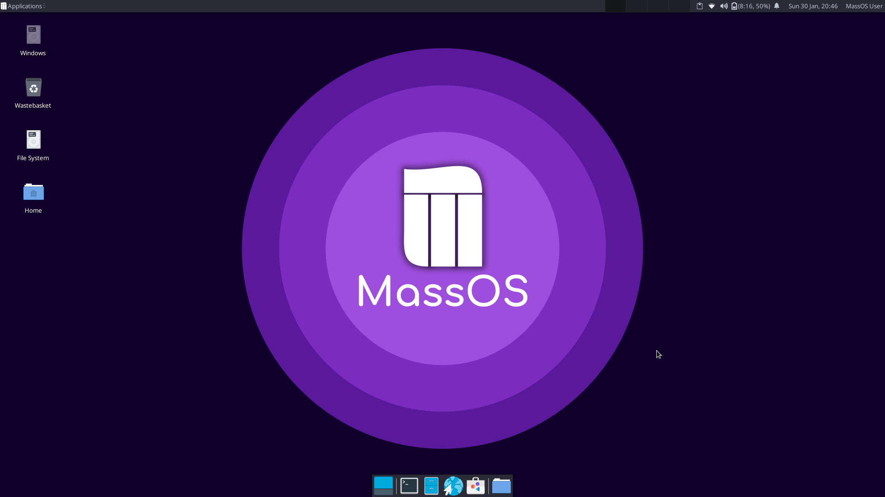
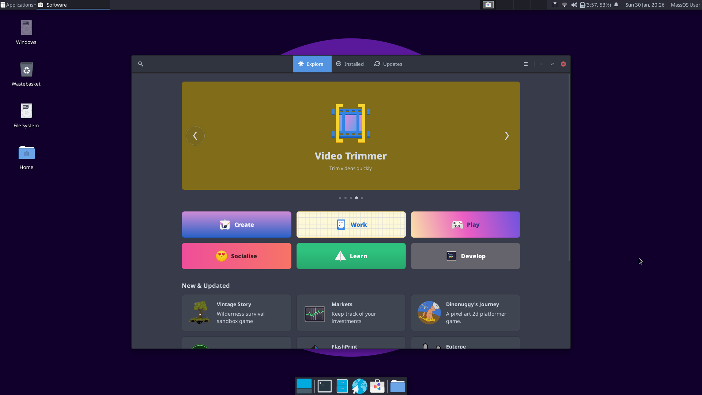
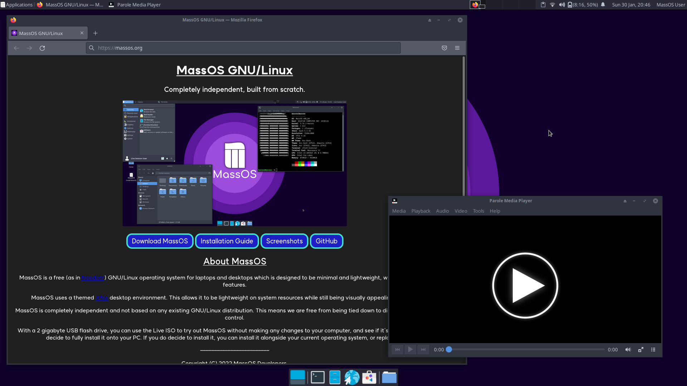

Screenshot of the MassOS desktop with the apps menu, file manager and terminal open:

Screenshot of the pure MassOS desktop without any programs open:
Screenshot of the software center (GNOME Software) included in MassOS:
Screenshot of Mozilla Firefox and Parole Media Player on MassOS:
